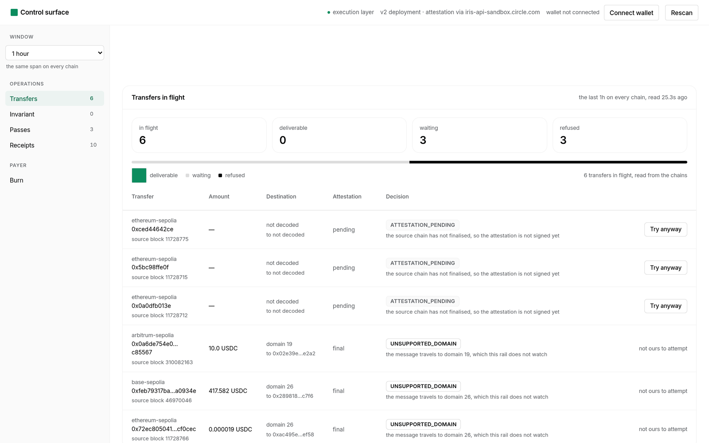

The tokens are burned on the source chain. The destination has not minted them, and it will not, until somebody hands it a signed attestation. In between, the value is spendable nowhere.
The rail reads both chains and answers with a decision. Nothing is broadcast here.

Every burn this rail can see is paired with the mint the destination chain reported for it. Nothing else counts.
reading both chains…
measuring each chain's block rate…
What this instance has met while reading, and what it is able to refuse.
The destination's verdict is read before anything is spent.
Creating a transfer is the payer's own transaction.
Deliveries and refusals, with the evidence that produced them.
counting this instance's own receipts